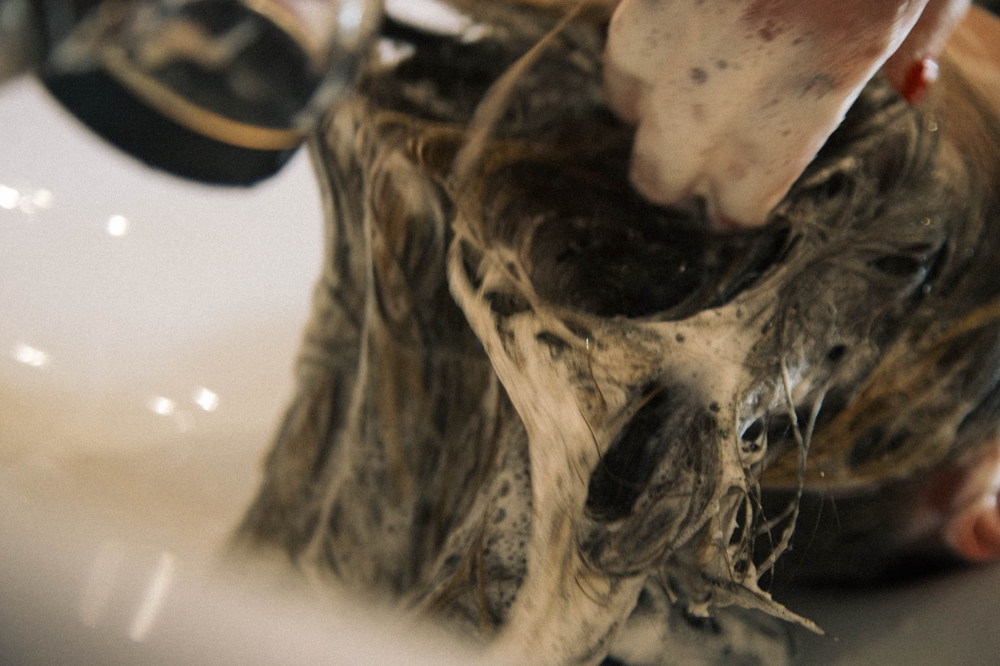
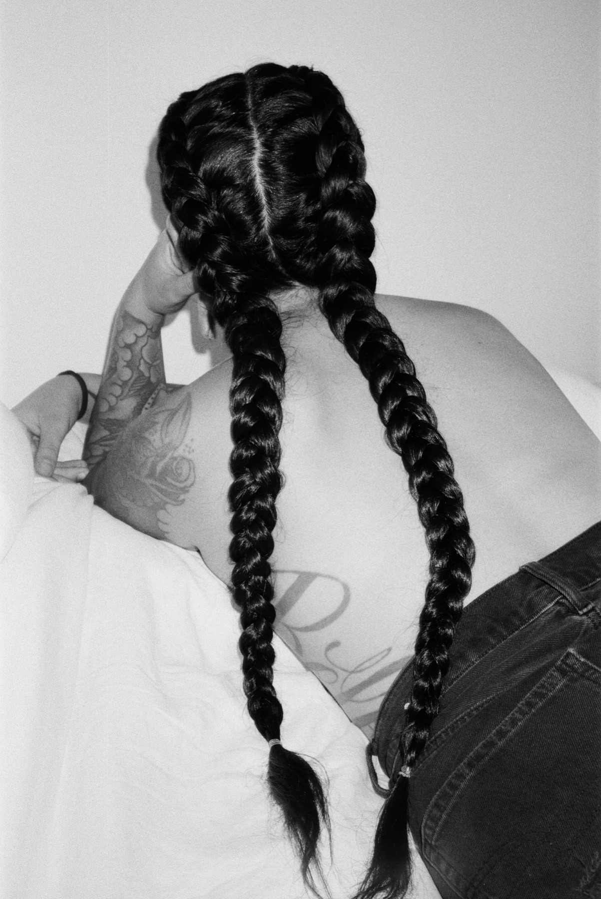

Cincinnati Hair Extensions
Luxury extensions, Blake's specialty.
Custom-matched, seamlessly blended, and installed by a certified stylist — Blake is Free Hair Salon's dedicated extension specialist, serving clients throughout Cincinnati.


K-Tip (Keratin Bond)
New hair used with every cycle for a clean, natural blend. Removal is quick and painless — typically around 30 minutes.
Silk Weft
One of the most natural-looking, comfortable methods available, custom-matched to your natural color for a seamless result.
Built to Last
Lasts 12–20 weeks with proper care. Every install starts with a one-on-one consultation to build your perfect plan.
Extensions FAQ
What to know before you book
How much do hair extensions cost in Cincinnati?
Pricing starts at $250 and varies depending on your goals and hair type — determined during your consultation. A $500 non-refundable deposit reserves your installation appointment, your custom-ordered hair, and Blake's time, and goes directly toward your final balance.
How do I care for my extensions?
Wait 24 hours before washing after installation (a little longer before tying hair up with silk wefts). Use a heat protectant before styling, avoid wet buns and brushing near the bonds, and skip silicones and sunscreen on your hair to prevent color changes. Blake recommends Oway Glossy Nectar or Reverie Ever Recovery Oil to keep extensions soft and radiant. Shedding a few extensions over time is normal, especially if worn past the recommended timeframe.
How long does removal take?
For K-tip clients, new hair is used with each cycle to maintain integrity and cleanliness. Removal is quick and painless, typically taking around 30 minutes.
Is Free Hair Salon eco-friendly?
Yes — Free Hair Salon is a certified Green Circle Salon, recycling and recovering up to 95% of its beauty waste, and uses vegan, cruelty-free, low-tox products throughout every service.